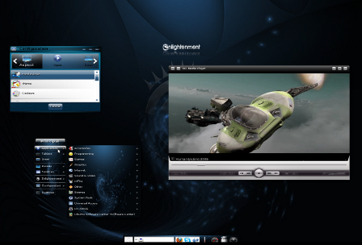

Enlightenment is historically a window manager based on FVWM. The first stable version "E16" is still in use, notably in the Elive distribution. Today, "E27" is officially unstable, yet it is used by many distributions. In fact, "E27" is simply under intensive development and has become a fully-fledged graphical environment. It relies on libraries called EFL (Enlightenment Foundation Libraries). On the menu: Extreme speed and customization. Everything is configurable via a simple control center, or with your own scripts. One of its distinctive features is also the native support for animated backgrounds. E27 also has its own software that you can discover.
